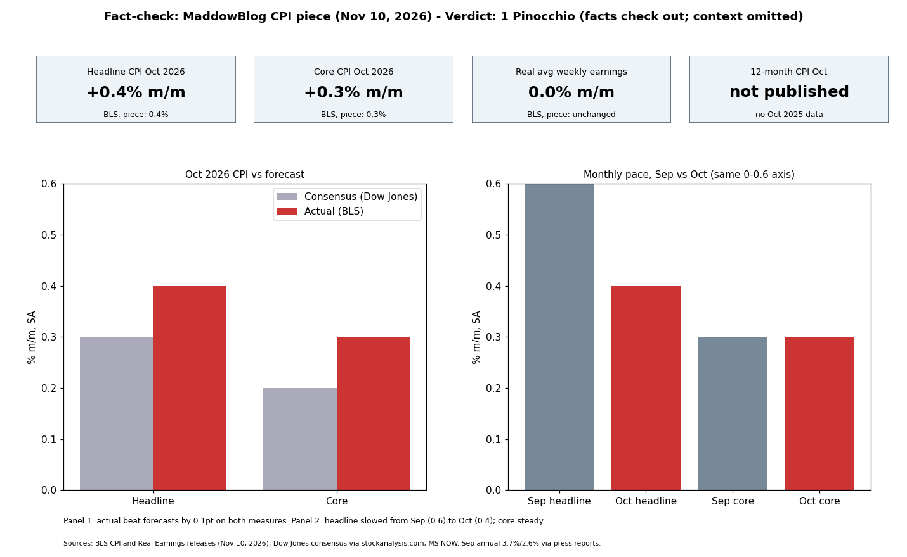

The October 2026 CPI figures (headline +0.4%, core +0.3%, both above forecast), the unchanged real weekly earnings, and the missing year-over-year comparison all match BLS. The piece leaves out that headline inflation slowed from +0.6% in September, and that the 0.4% was mostly food and shelter after a 5.2% energy spike in September. Its Fed framing is also undocumented.
| Claim | Verdict | Evidence |
|---|---|---|
| Trump: "The inflation is solved" (Fox) | Supported by press reports; wording and format not primary-verified | Spectrum News, Nov 3, 2026, quotes "inflation is solved" on Fox and Friends |
| Oct CPI +0.4%, worse than expected | True | BLS; consensus 0.3% |
| Core +0.3%, worse than expected | True | BLS; consensus 0.2% |
| No year-over-year comparison because of last fall's shutdown | True | BLS: October 2025 data not collected during lapse in appropriations |
| Inflation wiped out wage gains; real weekly earnings unchanged (NYT) | True | BLS Real Earnings: avg hourly +0.4% = CPI-U +0.4%, real weekly 0.0%. Production/nonsupervisory real weekly -0.3% |
| Data may add pressure on Fed to raise rates | Plausible | CME odds above 80% for a December hike pre-report; Waller leaning to a hike. A prior hike is not confirmed. |
| Prices not "coming down"; inflation not "solved" | Supported | Sep 12-month CPI 3.7%, core 2.6%; Oct monthly still positive |
Headline slowed from 0.6% (Sept) to 0.4%. "Prices continue to climb" is true of levels but omits the deceleration.
Confidence: high on BLS numbers; medium on the Trump quote; low on the Fed "again".